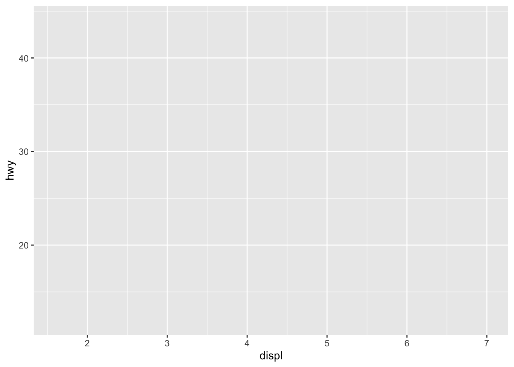

packages <- c("tidyverse",
"dplyr","broom",
"WDI", "fixest",
"countrycode"
)
# Install uninstalled packages
lapply(packages[!(packages %in% installed.packages())], install.packages)
# Load all packages to library
lapply(packages, library, character.only = TRUE) Visualizations
📊 Introduction to ggplot2
ggplot2 is one of the most powerful and flexible packages in R for creating data visualizations. It follows the Grammar of Graphics, meaning it builds plots in layers.
We’ll use the built-in mpg dataset for the basic examples.
1. Basic Plot Structure
Every ggplot2 plot starts with the ggplot() function, where you specify:
- The data frame
- The aesthetic mappings:
aes()
library(ggplot2)
ggplot(data = mpg, aes(x = displ, y = hwy))
This creates a plot object, but it won’t render a chart until you add a layer.
2. Add Geometries
You must add a geometry layer (geom_*()) to display the data.
ggplot(mpg, aes(x = displ, y = hwy)) +
geom_point()
Common geometries:
geom_point()– scatterplotgeom_line()– line plotgeom_col()– bar chart (with values)geom_bar()– bar chart (with counts)geom_boxplot()– boxplotgeom_histogram()– histogram
3. Aesthetic Mappings
You can map variables to color, size, shape, or linetype inside aes().
ggplot(mpg, aes(x = displ, y = hwy, color = class)) +
geom_point()
4. Labels and Titles
Use labs() to customize the title, subtitle, and axis labels.
ggplot(mpg, aes(x = displ, y = hwy, color = class)) +
geom_point() +
labs(
title = "Fuel Efficiency by Engine Size",
subtitle = "Colored by Vehicle Class",
x = "Displacement (L)",
y = "Highway MPG",
color = "Class"
)5. Facets (Small Multiples)
Use facet_wrap() to split the data into multiple panels by category.
ggplot(mpg, aes(x = displ, y = hwy)) +
geom_point() +
facet_wrap(~ class)
6. Themes
Themes control the look of the plot: grid, font, background.
ggplot(mpg, aes(displ, hwy)) +
geom_point() +
theme_minimal()
Popular themes:
theme_minimal()theme_classic()theme_light()theme_bw()theme_void()
7. Scales
Use scale_*() functions to adjust axes, colors, or sizes.
ggplot(mpg, aes(displ, hwy, color = class)) +
geom_point() +
scale_color_viridis_d()8. Full Example
ggplot(mpg, aes(x = displ, y = hwy, color = class)) +
geom_point(size = 3, alpha = 0.8) +
labs(
title = "Fuel Efficiency vs. Engine Size",
subtitle = "Vehicle class shown by color",
x = "Engine Displacement (L)",
y = "Highway MPG",
color = "Class"
) +
theme_minimal() +
scale_color_viridis_d()Applied Examples for Statistical Models
df <- readRDS("Data/data_reg.rds")
ols <- lm(deaths_civilians ~ gdp_pc+edu+population+no.troops, data = df)
summary(ols)
Call:
lm(formula = deaths_civilians ~ gdp_pc + edu + population + no.troops,
data = df)
Residuals:
Min 1Q Median 3Q Max
-691.4 -138.3 -58.8 19.3 17245.8
Coefficients:
Estimate Std. Error t value Pr(>|t|)
(Intercept) 2.792e+02 7.025e+01 3.974 7.43e-05 ***
gdp_pc -9.341e-03 6.865e-03 -1.361 0.173836
edu -2.518e+00 7.168e-01 -3.513 0.000458 ***
population 4.079e-06 6.107e-07 6.680 3.45e-11 ***
no.troops 5.547e-03 1.577e-03 3.517 0.000450 ***
---
Signif. codes: 0 '***' 0.001 '**' 0.01 '*' 0.05 '.' 0.1 ' ' 1
Residual standard error: 657.4 on 1396 degrees of freedom
(539 observations deleted due to missingness)
Multiple R-squared: 0.05872, Adjusted R-squared: 0.05602
F-statistic: 21.77 on 4 and 1396 DF, p-value: < 2.2e-16 coef_df <- tidy(ols, conf.int = TRUE) %>%
filter(term != "(Intercept)") %>%
mutate(term = fct_reorder(term, estimate))
ggplot(aes(x = estimate, y = term), data=coef_df) +
geom_point() +
geom_errorbar(aes(xmin = conf.low, xmax = conf.high), width = 0.2) +
labs(
title = "OLS Coefficient Plot: GDP",
x = "Estimate", y = NULL
) +
theme_minimal()Another example with Vdem Data
vdem <- vdemdata::vdem
vdem <- vdem %>%
mutate(democracy_binary = ifelse(v2x_regime >= 2, 1, 0))ols <- lm(e_gdppc ~ v2x_libdem+v2x_corr+ as.factor(e_regionpol_6C), data = vdem)
broom::tidy(ols, conf.int = TRUE) %>%
mutate(term = recode(term,
"v2x_libdem" = "Liberal Democracy",
"v2x_corr" = "Corruption Control",
"as.factor(e_regionpol_6C)2" = "Latin America & Caribbean",
"as.factor(e_regionpol_6C)3" = "Middle East & North Africa",
"as.factor(e_regionpol_6C)4" = "Sub-Saharan Africa",
"as.factor(e_regionpol_6C)5" = "Western Europe & North America",
"as.factor(e_regionpol_6C)6" = "Asia & Pacific"
# Region 1 is the reference category — not shown in output
))%>%
mutate(term = factor(term, levels = rev(c(
"Liberal Democracy",
"Corruption Control",
"Latin America & Caribbean",
"Middle East & North Africa",
"Sub-Saharan Africa",
"Western Europe & North America",
"Asia & Pacific",
"(Intercept)"
)))) %>%
ggplot(aes(x = estimate, y = term)) +
geom_point() +
geom_errorbar(aes(xmin = conf.low, xmax = conf.high), width = 0.2) +
labs(
title = "OLS Coefficient Plot: GDP",
x = "Estimate", y = NULL
) +
theme_minimal()